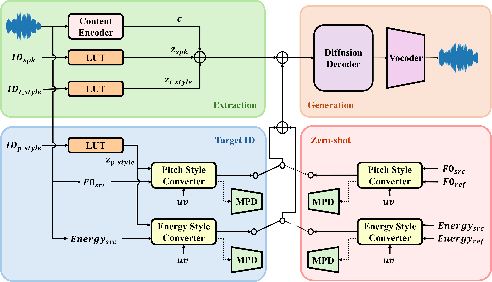

Joon-Seung Choi, Dong-Min Byun, and Seong-Whan Lee
Singing style is a crucial aspect for a natural and expressive singing voice. Singers utilize singing styles to convey the feeling or emotion of the songs. Several works have been proposed to control singing style to make the singing voice more expressive. Recently, VibE-SVC successfully controls vibrato by predicting high-frequency F0 contour. In this paper, we introduce a singing voice conversion framework, called VibE-SVC2, to improve singing style conversion performance and controllability. The model offers control over two types of singing styles: a pitch style and a timbre style. For the pitch style, we introduce an energy style converter to address remaining style information of the target style in the energy contour. In addition, we propose a zero-shot pitch style converter, called ZSP, which mimics the pitch style of reference audio. To improve controllability of the model, we propose vibrato rate control that is an independent control of vibrato extent, which is unavailable in VibE-SVC. For the timbre style, we extend the model to handle a variety of timbre styles. We empirically found that the model struggles with converting vocal fry samples into other styles due to its subharmonic characteristics. To address this, we propose a novel Subharmonic Correction algorithm to refine the F0 contour for more natural timbre conversion. Through comprehensive objective and subjective evaluations, we demonstrate that VibE-SVC2 provides fine-grained, independent control over two types of singing styles, outperforming existing methods.
